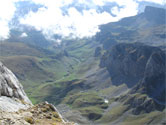
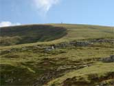
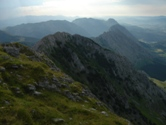
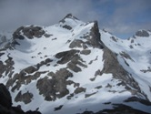

(con colaboraciones de A. Alcalde)
| Fuerteventura
Agosto 2001 | |
| Picos - Collado Jermoso
Octubre 2001 | 
|
| Pozalagua
Octubre 2001 | 
|
| Urdaibai
Octubre 2001 | |
| Altube
Noviembre 2001 | 
|
| Dima
Noviembre 2001 | 
|
| Pirineos -
Anie
Diciembre 2001 | 
|
| Picos - Bulnes
Enero 2002 | 
|
| Baqueira
Marzo 2002 | 
|
| Gorbea
Abril 2002 | 
|
| Peña Carria en Valderejo
Abril 2002 | 
|
| Kolitza en Encartaciones
Mayo 2002 | 
|
| Cañón de Añisclo en Ordesa
Junio 2002 | 
|
| Urederra en Urbasa
Julio 2002 | 
|
| Menorca
Agosto 2002 | 
|
| Aizkorri
Septiembre 2002 |

|
| MIGUEL EN CHINA
Septiembre 2002 |

|
| Candina
Octubre 2002 |

|
| Monte Perdido
Octubre 2002 |

|
| Valle de Ordesa
Octubre 2002 |

|
| Itxina en Gorbea
Noviembre 2002 |

|
| Ungino desde Orduña
Noviembre 2002 |

|
| Barranco de Aritzaga en Aralar
Diciembre 2002 |

|
| Cuevas de Baltzola en Dima
Enero 2003 |

|
| Saldropo y Paso de Atxuri en Gorbea
Febrero 2003 |

|
| Anboto y Orisol desde Oleta
Marzo 2003 |

|
| San Adrian y Monte Aratz en la Sierra del Aizkorri
Abril 2003 |

|
| Lagos de Ayous y Midi d'Ossau
Mayo 2003 |

|
| Balaitus
Junio 2003 |

|
| Anboto
Julio 2003 |

|
| Valle de Ordesa y Circo de Soaso
Septiembre 2003 |

|
| Lekanda en Parque Natural del Gorbea
Octubre 2003 |

|
| Untzillaitz
Noviembre 2003 |

|
| Errozate y Mendizar en Pirineos
Enero 2004 | 
|
| Toloño
Febrero 2004 |

|
| Cresterio del Aizkorri: Arbelaitz, Iraule, Aitzuri y Aketegi
Marzo 2004 |

|
| Ogoño en Urdaibai
Abril 2004 |

|
| Pagoeta y Parque Botanico de Ituraran
Mayo 2004 |

|
| Ganekogorta
Julio 2004 |

|
| La Palma en Islas Canarias
Agosto 2004 |

|
| Monte Ermua entre Plencia y Arminza
Septiembre 2004 |

|
| Mugarra
Octubre 2004 |

|
| Bisaurin
Noviembre 2004 |

|
| Sierra de Aloña
Enero 2005 |

|
| Aldamin y Gorbea
Febrero 2005 |

|
| Batxikabo
Abril 2005 |

|
| Montes de Arno en Orzoko
Mayo 2005 |

|
| Peñas de Aia
Junio 2005 |

|
| Picos: Refugio de Cabrones
Julio 2005 |

|
| Pico del Fraile en Orduña
Septiembre 2005 |

|
| Parque Natural de Izki
Octubre 2005 |

|
| Castillo de Acher en el Valle de Echo
Noviembre 2005 |

|
| Andarto en Araotz
Enero 2006 |

|
| Zarautz y Pagoeta
Febrero 2006 |

|
| Fuentes Carrionas
Marzo 2006 |

|
| Buciero y Faros de Santoña
Abril 2006 |

|
| Palomares en la Sierra de Cantabria
Mayo 2006 |

|
| Vegarredonda en Picos
Junio 2006 |

|
| Valle de Benasque en Pirineos
Agosto 2006 |

|
| Madeira
Septiembre 2006 | |
| Mallo de Atxerito
Octubre 2006 |  |
| Anboto desde Arrazola
Noviembre 2006 |

|
| Leungane
Enero 2007 |

|
| Refugio de Estos y Pico Claravides en Benasque
Febrero 2007 |

|
| Monte Santiago en Orduña
Marzo 2007 |

|
| Cancun
Abril 2007 | |
| Otoio
Mayo 2007 |

|
| Punta Cana
Junio 2007 |

|
| Ibiza
Julio 2007 | |
| Gorbea desde Zeanuri
Agosto 2007 |  |
| monte Bayo en Urbasa
Septiembre 2007 |

|
| municipio de Redes en Asturias
Octubre 2007 | |
| Raya de Alano en Pirineos
Diciembre 2007 |

|
| Anie en Pirineos
Enero 2008 |

|
| Midi en Pirineos
Febrero 2008 | |
| Lagos de Covadonga y Vegaredonda en Picos
Marzo 2008 |

|
| Udalaitz
Abril 2008 | |
| Valderejo
Mayo 2008 | |
| Atxarte
Junio 2008 |

|
| San Miguel de Erenozar
Julio 2008 | |
| Alpes, Tour del Monte Rosa
Agosto 2008 |

|
| Los Jorrios
Septiembre 2008 | |
| La Mesa de los Tres Reyes
Octubre 2008 |

|
| Burbona
Noviembre 2008 |

|
| reserva del Saja. Ruta de Sejos
Diciembre 2008 | |
| Gorbea. Paseo a Egiriñao
Febrero 2009 |

|
| Etapa del Camino de Satiago. De Pobeña a Castro
Marzo 2009 | |
| Ganekogorta
Abril 2009 |

|
| Marruecos. Trekking por el Altlas
Mayo 2009 | |
| Cresterio del Anboto
Junio 2009 |  |
| camino del Ebro: desde Pesquera a Valdelateja
Julio 2009 |

|
| Cabo Ogoño sobre Laga
Agosto 2009 |

|
| Pedals de Foc. Valle de Aran
Septiembre 2009 | |
| Pagasarri
Octubre 2009 | |
| Senda de Garrastaxu en Gorbea
Noviembre 2009 |

|
| Pico San Vicente
Diciembre 2009 |

|
| Ernio
Febrero 2010 |

|
| Picos - Horcados Rojos desde Aliva
Abril 2010 |  |
| Pagomakurre-Atxular-Itxina-Arraba
Mayo 2010 |

|
| via verde Sierra de la Demanda
Junio 2010 | |
| Carros de Foc: Pirineo Leridano
Julio 2010 | |
| Fuerteventura
Agosto 2010 | |
| Picos: Vega de Ario
Octubre 2010 |

|
| Aizkorri por Otzaurte
Noviembre 2010 |

|
| refugio Gabardito-Lizara-Bisaurin
Enero 2011 |

|